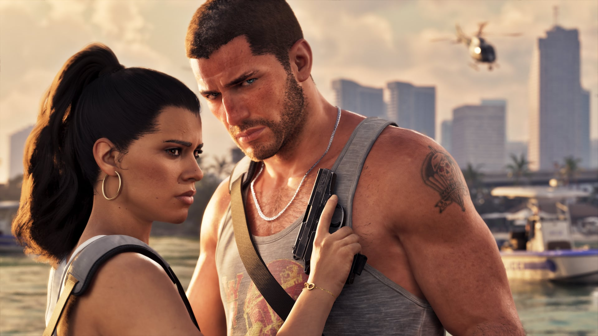

© Rockstar Games / Take-Two Interactive
Un nouveau report ? Ce que Rockstar a vraiment dit
EN BREF
- Propos de Rob Nelson (Rockstar North) rapportés le 13 octobre 2026, lors d'un entretien avec le magazine japonais Famitsu
- Ce n'est pas une nouvelle annonce de date : sortie toujours prévue le 19 novembre 2026
- L'équipe travaille encore sur les systèmes interconnectés, l'optimisation et la stabilité du lancement
- Aucun nouveau report n'est annoncé
Interrogé sur un éventuel nouveau report, Rob Nelson, l'un des deux responsables de Rockstar North (le studio principal derrière GTA), a répondu au magazine japonais Famitsu que le jeu sera « bel et bien » publié, et qu'il se réjouit que les joueurs aient confiance dans la qualité du résultat. Ses propos ont été relayés par la presse le 13 octobre 2026.
Ce que ça change : rien sur la date
Les médias qui ont repris l'information le précisent : ces déclarations rassurent, mais ne constituent pas une nouvelle annonce de date. La sortie reste fixée au jeudi 19 novembre 2026 sur PS5 et Xbox Series X|S, comme l'indique toujours la page officielle du jeu. Pour le détail de ce qui est confirmé (préchargement, éditions, version physique), lisez Lancement du 19 novembre : ce qui est confirmé, et ce qui ne l'est pas.
Où en est le développement ?
D'après le résumé de KeenGamer, l'équipe se dit satisfaite de l'avancement, tout en poursuivant le travail sur les systèmes interconnectés du jeu, l'optimisation des performances et la stabilité du lancement. C'est le discours habituel à cette période d'un grand projet, pas une indication de retard.
Rappel : l'historique des reports
Selon Screen Rant, le jeu a d'abord été annoncé pour mai 2025, puis reporté à mai 2026, puis au 19 novembre 2026. Une partie des joueurs reste prudente, ce qui explique l'attention portée à chaque déclaration.
À retenir
- Pas de nouvelle date : 19 novembre 2026.
- Préparez-vous quand même : préparer sa console et le mode d'emploi du préchargement.